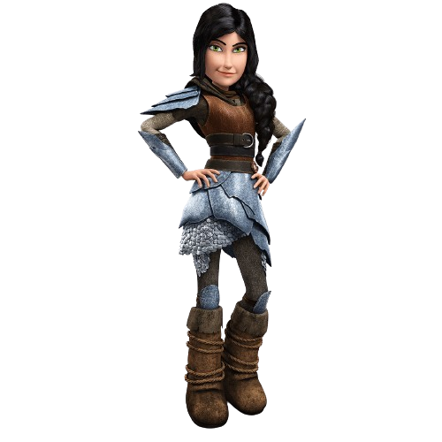

Hiccup
In the heart of Berk, amidst dragon-filled skies, strides Hiccup, a beacon of ingenuity and courage. With his fiery hair and determined gaze, he defies convention, forging unbreakable bonds between humans and dragons. Accompanied by his steadfast companion, Toothless, Hiccup embarks on daring adventures, challenging the status quo and proving that true strength lies in compassion and understanding. Through his unwavering spirit and daring feats, he inspires all who cross his path to embrace their uniqueness and strive for a world where harmony reigns supreme.
Astrid
In the rugged terrain of Berk, where dragons roam freely and heroes are forged in the heat of battle, strides Astrid, a warrior of unparalleled skill and determination. With her fierce gaze and braided blonde locks, she commands respect and admiration from all who know her. Astrid's strength lies not only in her mastery of combat, but in her unwavering loyalty to her friends and her unyielding determination to protect her village at all costs. Alongside her loyal dragon, Stormfly, she fearlessly charges into the fray, embodying the very essence of courage and resilience.

Heather
In the windswept lands of Berk, where secrets whisper through the valleys and the skies echo with the roar of dragons, walks Heather, a figure shrouded in mystery and determination. With her striking crimson hair and piercing gaze, she exudes an air of quiet strength and resilience. Heather's journey is one of redemption and discovery, as she navigates the complexities of her past and forges a new path alongside her trusty Razorwhip, Windshear.
Fishleg
In the bustling village of Berk, where dragons soar and heroes are born, there stands Fishlegs, a gentle giant with a heart as vast as the open sea. With his ever-present Gronckle, Meatlug, by his side, Fishlegs navigates the world with wide-eyed wonder and unbridled enthusiasm. Despite his shy demeanor and penchant for scholarly pursuits, Fishlegs proves time and again that true courage knows no bounds.
Stoick
In the rugged landscape of Berk, where the winds whisper tales of valor and the seas sing of adventure, stands Stoick the Vast, a towering figure of strength and wisdom. With his weathered face and commanding presence, Stoick embodies the very essence of Viking leadership. As chief of the tribe, he shoulders the weight of responsibility with unwavering resolve, always putting the safety and well-being of his people above all else.